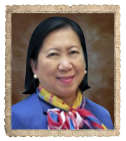

<div class="president">
    <div class="wholepage">
        <div class="py-5 w-100 position-relative">
            <div id="officerscript" class="position-absolute w-100 d-flex justify-content-center mx-auto">
                
            </div>
            <h2 class="text-center my-5">
                <u>
                    MESSAGE FROM THE <br> IMMEDIATE PAST PRESIDENT
                </u>
            </h2>
        </div>
        <div class="body">
            <div class="row">
                <div class="order-md-1 order-2 col-12 col-md-9">
                    <p>
                        The Year that Was
                    </p>
         
                    <p>
                        As I bow out as Club President of the Rotary Club of Quiapo Plaza Miranda, I feel very excited and all I can think of is at last, I can already rest and relax, for the next President will be taking on the reign of steering the club to a new direction and tread on a new path.
                    </p>
                    
                </div>
                <div class="order-1 order-md-2 col-4 col-md-2 align-self-center">
                    
                </div>
            </div>
            
            
            <p>
                While anticipating excitedly to a new role after my term, I can’t help but look back and remember the way I became the President of this club. Though I was not elected through a normal club election process, nor a victim of the finger pointing of CP Harry to become President, I believe it was Providential that I should lead this club during a most unfortunate time. Most Club Presidents accept the mandate of their club members because they are physically, emotionally and most especially, financially ready to lead their clubs. But in my case, I volunteered to lead the club at a time when I was emotionally and financially challenged. Since day 1 of my term, my
                Itay had been in and out of the hospital due to a lingering illness that had brought financial strain to our family and to me personally , since I am the eldest among 5 children. Another challenge I had to face head on was that the company I work with is in its winding up phase of operation, which made me very busy preparing our employees emotionally & psychologically for their eventual separation. Enhancing their capacity and giving them new skill which they can use in facing a new life after being employed by our company for so many years consumed all my time from Mondays to Fridays.
            </p>

            <p>
                Despite all these challenges, I thank God that He did not fail me but instead, He was with me all the time while I was trying my best to do my responsibilities as a parent & daughter and sister, an Executive of a company about to say goodbye to the business community and as leader of the Rotary Club of Quiapo Plaza Miranda all at the same time. I thank not only Him but all the men and women of this prestigious club, who, gave their confidence in me and never a bit doubted my capacity. Thank you all for sharing your time, talent, resources and especially for making the difference in bringing RCQPM to its place in Rotary history as one of the most revered clubs in District 3810. 
            </p>
            
            <p>
                Our club may not be as financially stable as other older and bigger clubs in District 3810. Nonetheless, the club was able to accomplish so much during the Champion year because it is gifted with members who consider RCQPM their second family, hence, think only of what is good for the family and for the community. As a result, the club was able to accomplish worthy projects under the 7 Areas of Focus that have great impact to the community and its beneficiaries. These include the following:
            </p>
            
            <br>
            <p>
                Peace & Conflict Resolution <br> <br>
                -18-days Campaign on Preventing Violence Against Women and their Children<br>
                -Magkaibigan Tayo – Culture Understanding and Assimilation Program Between Muslims & Non-Muslim Young Professionals & College Students<br>
                -Forum / Workshop on Child Protection<br>
                -Basic Education & Literacy<br>
                -Donation of 3 Sets of Encyclopedias, Atlas & Computer Set to AC Herrera Elem School -Donation of School Supplies <br>to Antonio Luna Elem School in cooperation with our sister Club Gwangju-Shinchang Rotary Club in South Korea<br>
                -Sponsorship of 45 Pre-School Scholars at OSPAS Academy in Dasmarinas Cavite<br>
                -Book Reading to Aeta Children in Floridablanca, Pampanga by our youth partner Rotaractors 
            </p>
            <br>
            
            <p>
                Water and Sanitation<br> <br>
                -Completion & turn-over of Community Deep Well Jet-Matic Water Pump in Gerona, Tarlac<br>
                -Cleaning of Estero de Magdalena in Bgy 294<br>
                -Donation of Drinking water to Taal Volcano Eruption Evacuees in Lian, Sto Tomas and Balete all in Batangas<br>
                -Distribution of Personal Hygiene Kits in Mindoro, Camp Aguinaldo and Caloocan<br>
            </p>

            <p>
                Disease Prevention and Treatment<br>
                -Operation Linaw (Free Eye Check-Up & Distribution of Eyeglasses)<br>
                -Medical Mission in Mindoro, Caloocan & Tagaytay<br>
                -Dental Mission in Salamat Doc Community<br>
            </p>

            <p>
                -Distribution of RUSF, Vitamin D & Milk Formula for 0-12 Months Old for those with non-lactating mothers<br>
                -Participation in Anti-Polio Immunization Campaign in Manila (Rounds 1 – 3) Mother and Child Health<br>
                -Kalinga ng Kusina Series - Quiapo, Bgy 210 in Tondo, Camp Aguinaldo, Bgy 180 in Caloocan, <br> Bgy Muntinlupa, Paranaque, Balete,Batangas and donation of 10 Sacks of Rice in San Jose del Monte, Bulacan and 5 sacks<br>
                of Rice & P10k cash donation to Tuloy Street Children Foundation <br><br>
                Seminar <br><br>
                –Workshop on Child Protection Law Awareness <br>
                -Seminar on Reproductive Health and Family Planning<br><br>
                Economic and Community Development<br><br>
                -Liquid Dishwashing Soap Making<br>
                -May Pera sa Basura <br>
                - Eco-bag, pillow cases, and pajama making<br>
                using empty flour sacks <br>
                -Pambaon recipes cooking lessons<br>
                
            </p>

            <p>
                Supporting the Environment<br><br>
                -Tree Planting in Mindoro and Tarlac <br>
                
                -Estero Clean-Up<br><br>
                Disaster Response<br><br>
                -Distribution of Relief Goods for Taal Volcano Eruption Victims / Evacuees (Lian, Sto Tomas, Balete, Batangas) <br>
                -Distribution of Relief Goods to Fire Victims of Fugoso Street<br>
                -Distribution of Relief Goods to Flood Victims in Taytay & Cainta<br>
                -Distribution of Rice and Feeding of Fire Victims in Bgy Muntinlupa, Paranaque<br>
            </p>

            <p>
                In addition to the above accomplishments, our Club was able to organize two Rotary Community Corps, 1 Rotaract Club and 1 Interact Club as follows:
            </p>

            <p>
                Rotary Community Corps of Quiapo Purok Balete Rotary Corps of Barangay 294
CGEA Young Professionals Rotaract Club
Interact Club of Quiapo Plaza Miranda
            </p>
            
            <p>
                On Club Administration, we were able to recruit 16 new members and first time in our club that we invited guest speakers during our club meetings. It was also during the Champion Rotary Year that our Club was able to organize its first ever daughter Club the Rotary Club of Manila Sunrise.
            </p>

            <p>
                In order to keep the spirit of oneness and to maintain good relationships among members, we held various club fellowships, meetings, etc. We made our presence known in the district by supporting and participating in various district activities like fellowships, seminars, sports fests, and meetings.
            </p>

            <p>
                On contributions to the Rotary Foundation, our club has a total contribution of $6,337.24, courtesy of PP Benson Hari-Ong for giving $4,000 to the annual fund, PE Carol for giving $1,000, to PP Aileen and PP Enri giving $509.80 each, Treas Marissa and myself giving $100 each, and Rtns Divina Reyes, Nancy Roxas, Glenda Lim and Winona Lim giving $29.41 each.

            </p>

            <p>
                We may not be a rich Club, but our hearts are very rich in love for Rotary and our RCQPM. I am very proud to say that for this year, we did not only accomplish most of what we had planned to accomplish, but we also able to accomplish all of the 12-Rounds Governor’s Challenge and the Rotary Citation Challenge because we achieved all the required points to earn the Rotary Citation with Distinction. It was indeed a bountiful harvest for the Rotary Club of Quiapo Plaza Miranda despite the fact that our activities were unceremoniously interrupted by the Covid-19 pandemic.
            </p>

            <p>
                Mabuhay ang Rotary Club of Quiapo Plaza Miranda!!!

            </p>
            <div class="my-5 w-100 text-center">
                <h5>
                    Geneliza T. Hizon
                </h5>
                The Immediate Past President <br>
                RY 2019-20
            </div>
        </div>
    </div>
</div>